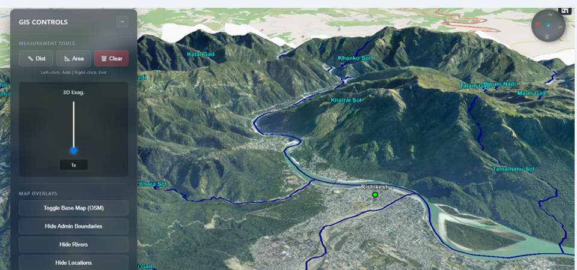
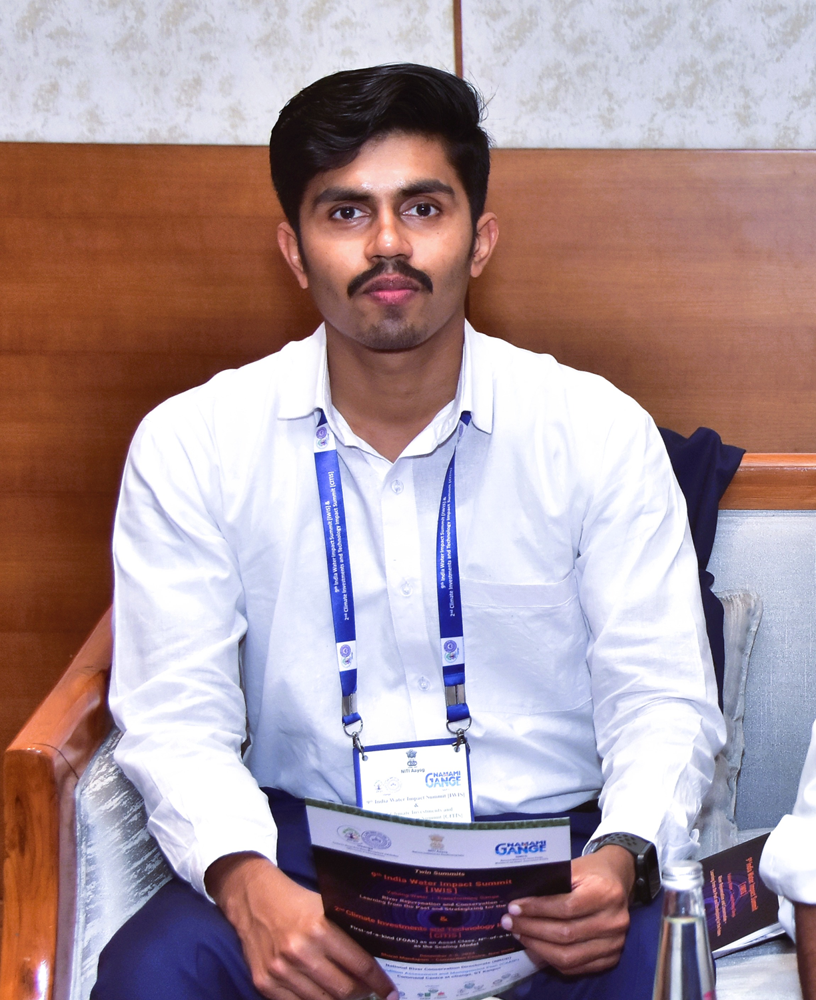
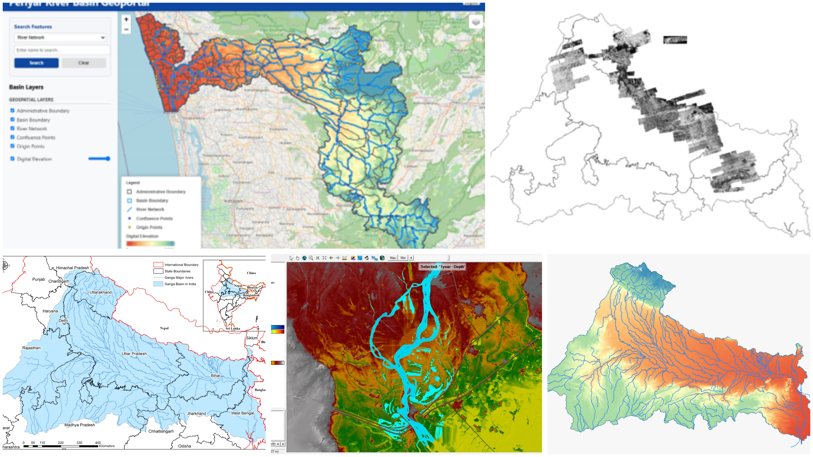
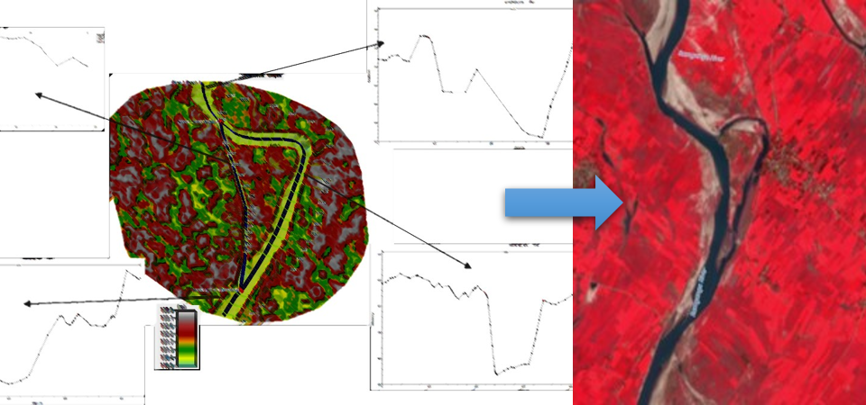
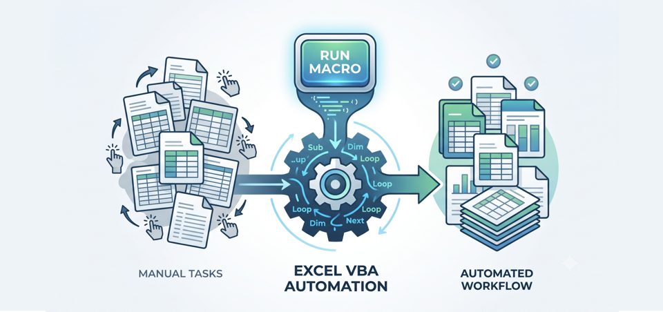
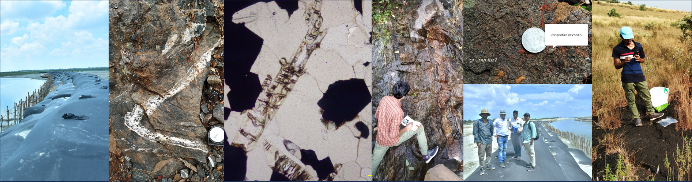

3D GIS Portal
A web-based 3D viewer bringing terrain, high-resolution raster data and vector layers into one interactive environment for non-specialist users.
CesiumDEMWebGIS3D
Project Scientist at the Centre for Ganga River Basin Management & Studies (cGanga), IIT Kanpur, working across hydrology, remote sensing and river-ecosystem management. Trained first as a geologist, then in GIS.
Geology gave the questions. GIS, remote sensing and hydrology gave the ways of answering them at scale.

I am currently working at Centre for Ganga River Basin Management and Studies, IIT Kanpur — hydraulic modelling, remote sensing pipelines and river-ecosystem management for the Ganga basin.
The path started with geology fieldwork and a bachelor's and master's degrees, then moved into GIS production at Deduce Technologies and IndiGEO, geospatial analysis at Kerala State Remote sensing and Environment Centre (KSREC), and river-basin science at cGanga — where a Project Associate role grew into a Project Scientist. I recently completed a PG Diploma in Geoinformatics at IGNOU alongside the work. What holds it together: turning a dense spatial dataset into something a river manager or district officer can actually open and use.
.

A web-based 3D viewer bringing terrain, high-resolution raster data and vector layers into one interactive environment for non-specialist users.

GIS + Remote Sensing + Hydrology + Water Resources, Eg: Watershed delineation, Stream extraction, Sub-basin analysis, River networks, Waterbody mapping, LULC, DEM processing,HEC-RAS Modelling, Flood inundation Mapping

HEC-RAS hydraulic and hydrologic flow modelling across multiple rivers and drains, supporting flood analysis and river-training interventions.

VBA-automated workflows for data processing, validation, analysis, and report generation, reducing manual effort and improving consistency in repetitive Excel-based tasks.
Most recent work sits at the surface. Keep scrolling and it runs down through five years of roles into the bedrock — the training everything else stands on.

Formal certifications, plus the seminars, workshops and summits that shaped the day-to-day work.
Open to conversations on GIS, remote sensing, river systems, hydraulic modelling and geospatial technology.